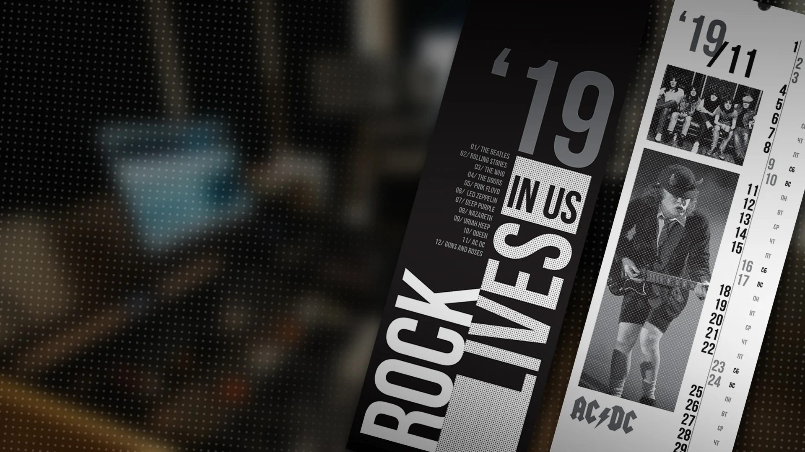
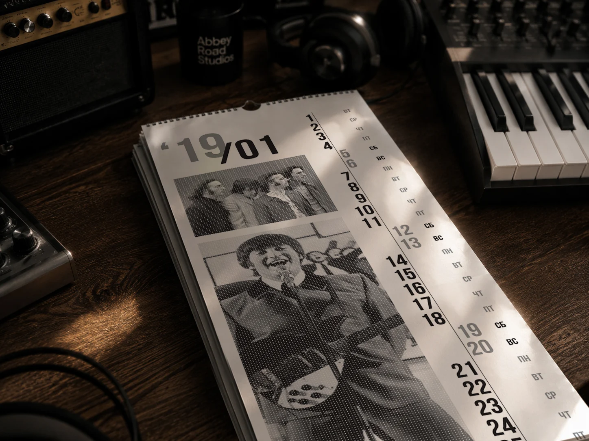
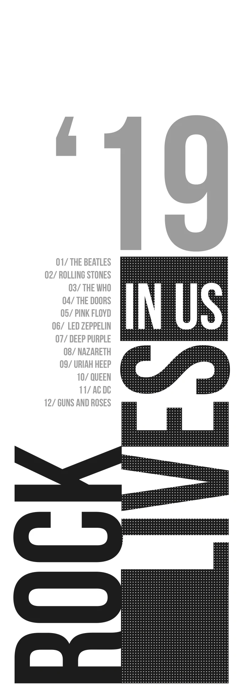
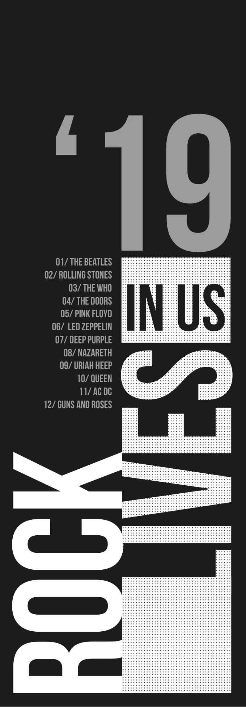
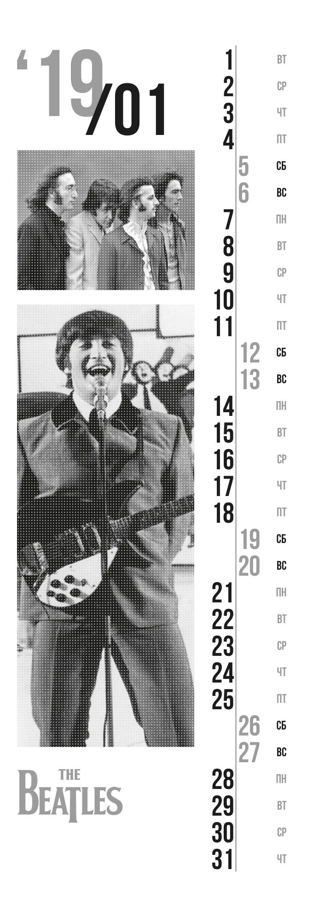
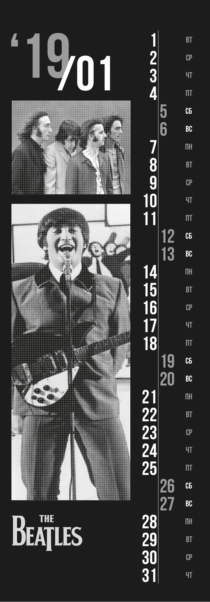
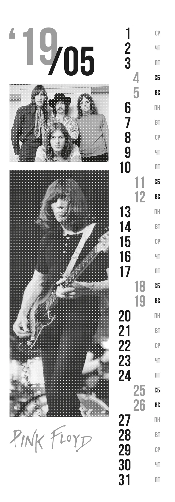
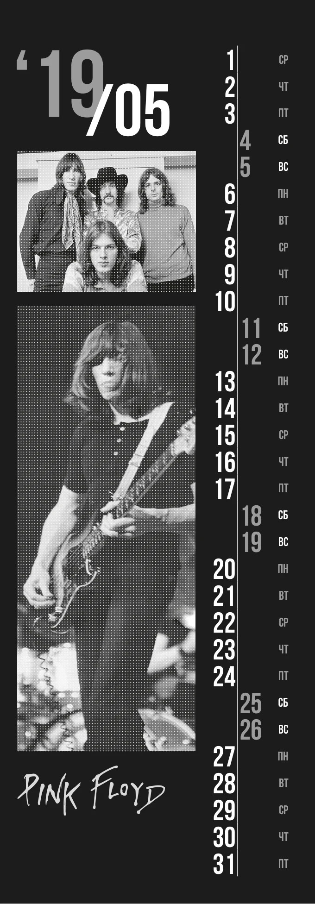
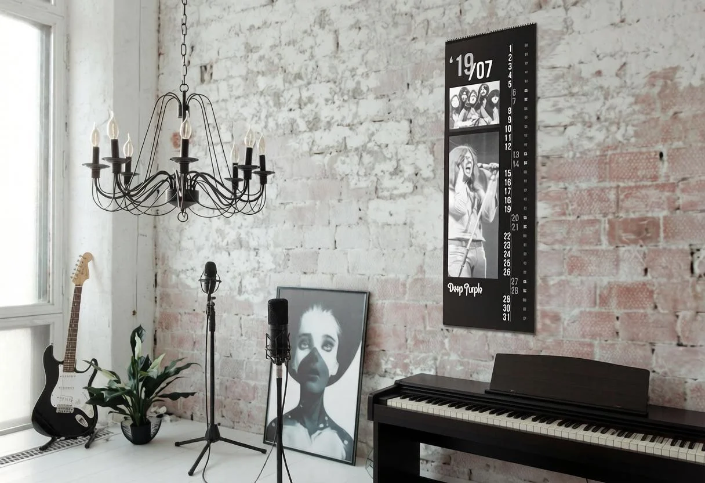
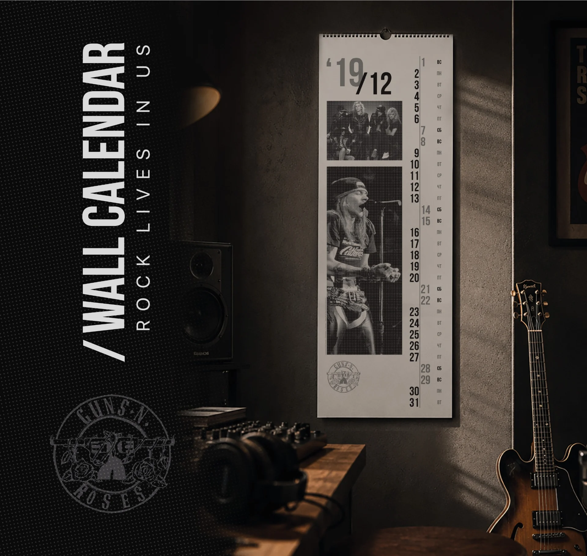

ЛИЧНЫЙ ПРОЕКТ / КАЛЕНДАРЬ / 2019
ROCK
LIVES IN US.

01 / ИДЕЯ
Музыка, которая
остаётся с нами.
Календарь, который я сделал для себя и друзей — как посвящение любимой рок-музыке. Каждый месяц отдан одной группе, от The Beatles до Guns N’ Roses.
Вытянутый формат напоминает концертную афишу. Крупные цифры, монохромные фотографии и растровая фактура объединяют двенадцать разных музыкальных историй.

02 / ДВЕ СТОРОНЫ
Один ритм.
Два настроения.
Чёрная и белая стороны используют одну композиционную систему. Контраст меняется, а иерархия остаётся: год и месяц, фотографии музыкантов, вертикальная колонка дат и логотип группы.


03 / ГРАФИЧЕСКАЯ СИСТЕМА
Типографика.
Фотография. Растр.
Точечный растр связывает фотографии с печатной эстетикой музыкальных афиш. Узкая колонка календарной сетки задаёт вертикальный ритм, оставляя основное пространство героям месяца.
Ниже — оригинальные макеты января и мая в двух исполнениях.




04 / В ПРОСТРАНСТВЕ
Часть музыкального
окружения.
Монохромная палитра и вытянутые пропорции позволяют календарю работать как самостоятельному графическому объекту.


Личный некоммерческий проект, созданный для себя и друзей. Дизайн календаря — Александр Курбатов. Фотографии музыкантов и логотипы групп использованы как материалы посвящения; их авторство принадлежит соответствующим авторам и правообладателям.